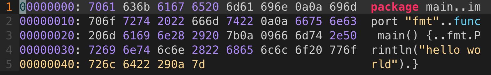
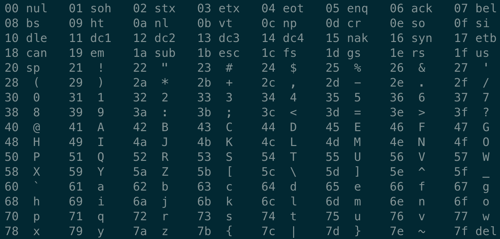
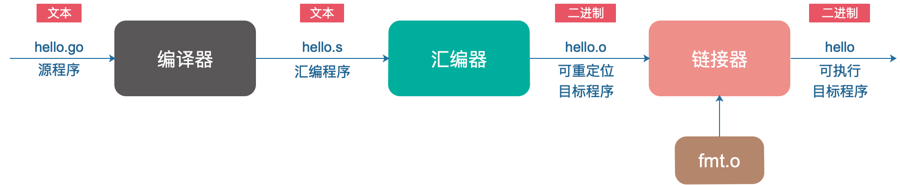
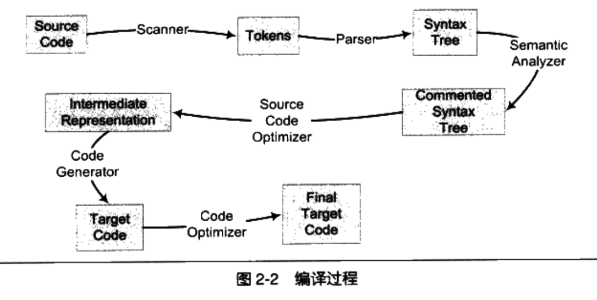
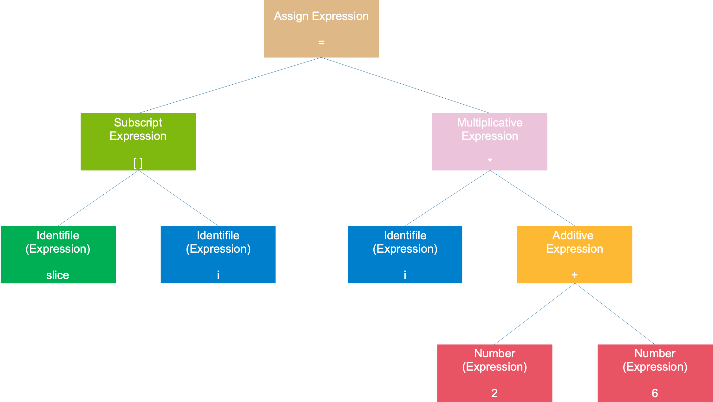
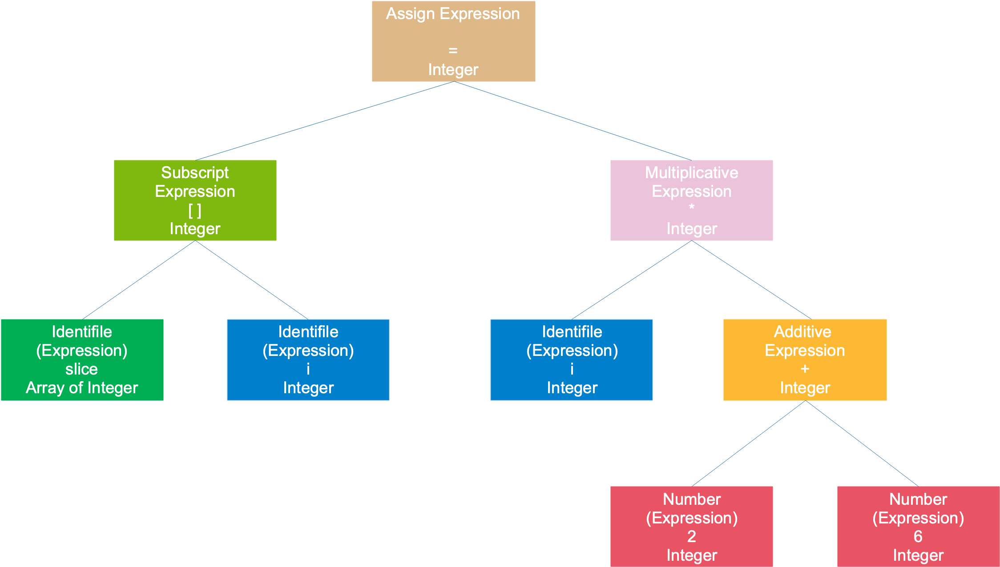
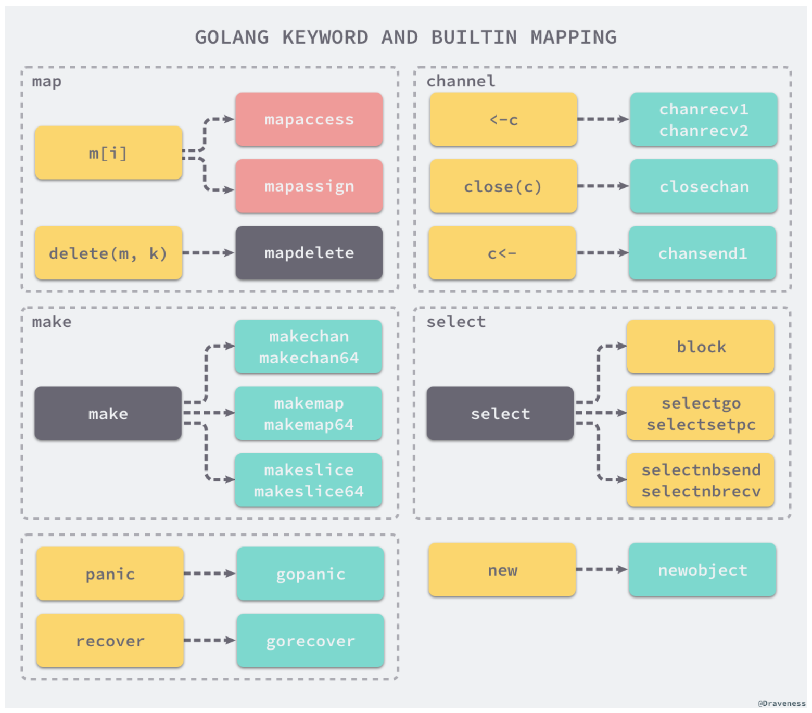

我们从一个 Hello World 的例子开始：
|
|
当我们用键盘敲完上面的 hello world 代码时，保存在硬盘上的 hello.go 文件就是一个字节序列了，每个字节代表一个字符。
用 vim 打开 hello.go 文件，在命令行模式下，输入命令：
|
|
就能在 vim 里以十六进制查看文件内容：

最左边的一列代表地址值，中间一列代表文本对应的 ASCII 字符，最右边的列就是我们的代码。再在终端里执行 man ascii：

和 ASCII 字符表一对比，就能发现，中间的列和最右边的列是一一对应的。也就是说，刚刚写完的 hello.go 文件都是由 ASCII 字符表示的，它被称为文本文件，其他文件被称为二进制文件。
当然，更深入地看，计算机中的所有数据，像磁盘文件、网络中的数据其实都是一串比特位组成，取决于如何看待它。在不同的情景下，一个相同的字节序列可能表示成一个整数、浮点数、字符串或者是机器指令。
而像 hello.go 这个文件，8 个 bit，也就是一个字节看成一个单位（假定源程序的字符都是 ASCII 码），最终解释成人类能读懂的 Go 源码。
Go 程序并不能直接运行，每条 Go 语句必须转化为一系列的低级机器语言指令，将这些指令打包到一起，并以二进制磁盘文件的形式存储起来，也就是可执行目标文件。
从源文件到可执行目标文件的转化过程：

完成以上各个阶段的就是 Go 编译系统。你肯定知道大名鼎鼎的 GCC（GNU Compile Collection），中文名为 GNU 编译器套装，它支持像 C，C++，Java，Python，Objective-C，Ada，Fortran，Pascal，能够为很多不同的机器生成机器码。
可执行目标文件可以直接在机器上执行。一般而言，先执行一些初始化的工作；找到 main 函数的入口，执行用户写的代码；执行完成后，main 函数退出；再执行一些收尾的工作，整个过程完毕。
在接下来的文章里，我们将探索编译和运行的过程。
Go 源码里的编译器源码位于 src/cmd/compile 路径下，链接器源码位于 src/cmd/link 路径下。
编译过程 #
我比较喜欢用 IDE（集成开发环境）来写代码， Go 源码用的 Goland，有时候直接点击 IDE 菜单栏里的“运行”按钮，程序就跑起来了。这实际上隐含了编译和链接的过程，我们通常将编译和链接合并到一起的过程称为构建（Build）。
编译过程就是对源文件进行词法分析、语法分析、语义分析、优化，最后生成汇编代码文件，以 .s 作为文件后缀。
之后，汇编器会将汇编代码转变成机器可以执行的指令。由于每一条汇编语句几乎都与一条机器指令相对应，所以只是一个简单的一一对应，比较简单，没有语法、语义分析，也没有优化这些步骤。
编译器是将高级语言翻译成机器语言的一个工具，编译过程一般分为 6 步：扫描、语法分析、语义分析、源代码优化、代码生成、目标代码优化。下图来自《程序员的自我修养》：

词法分析 #
通过前面的例子，我们知道，Go 程序文件在机器看来不过是一堆二进制位。我们能读懂，是因为 Goland 按照 ASCII 码（实际上是 UTF-8）把这堆二进制位进行了编码。例如，把 8个 bit 位分成一组，对应一个字符，通过对照 ASCII 码表就可以查出来。
当把所有的二进制位都对应成了 ASCII 码字符后，我们就能看到有意义的字符串。它可能是关键字，例如：package；可能是字符串，例如：“Hello World”。
词法分析其实干的就是这个。输入是原始的 Go 程序文件，在词法分析器看来，就是一堆二进制位，根本不知道是什么东西，经过它的分析后，变成有意义的记号。简单来说，词法分析是计算机科学中将字符序列转换为标记（token）序列的过程。
我们来看一下维基百科上给出的定义：
词法分析（lexical analysis）是计算机科学中将字符序列转换为标记（token）序列的过程。进行词法分析的程序或者函数叫作词法分析器（lexical analyzer，简称lexer），也叫扫描器（scanner）。词法分析器一般以函数的形式存在，供语法分析器调用。
.go 文件被输入到扫描器（Scanner），它使用一种类似于有限状态机的算法，将源代码的字符系列分割成一系列的记号（Token）。
记号一般分为这几类：关键字、标识符、字面量（包含数字、字符串）、特殊符号（如加号、等号）。
例如，对于如下的代码：
|
|
总共包含 16 个非空字符，经过扫描后，
| 记号 | 类型 |
|---|---|
| slice | 标识符 |
| [ | 左方括号 |
| i | 标识符 |
| ] | 右方括号 |
| = | 赋值 |
| i | 标识符 |
| * | 乘号 |
| ( | 左圆括号 |
| 2 | 数字 |
| + | 加号 |
| 6 | 数字 |
| ) | 右圆括号 |
上面的例子源自《程序员的自我修养》，主要讲解编译、链接相关的内容，很精彩，推荐研读。
Go 语言（本文的 Go 版本是 1.9.2）扫描器支持的 Token 在源码中的路径：
|
|
感受一下：
|
|
还是比较熟悉的，包括名称和字面量、操作符、分隔符和关键字。
而扫描器的路径是：
|
|
其中最关键的函数就是 next 函数，它不断地读取下一个字符（不是下一个字节，因为 Go 语言支持 Unicode 编码，并不是像我们前面举得 ASCII 码的例子，一个字符只有一个字节），直到这些字符可以构成一个 Token。
|
|
代码的主要逻辑就是通过 c := s.getr() 获取下一个未被解析的字符，并且会跳过之后的空格、回车、换行、tab 字符，然后进入一个大的 switch-case 语句，匹配各种不同的情形，最终可以解析出一个 Token，并且把相关的行、列数字记录下来，这样就完成一次解析过程。
当前包中的词法分析器 scanner 也只是为上层提供了 next 方法，词法解析的过程都是惰性的，只有在上层的解析器需要时才会调用 next 获取最新的 Token。
语法分析 #
上一步生成的 Token 序列，需要经过进一步处理，生成一棵以表达式为结点的语法树。
比如最开始的那个例子，slice[i] = i * (2 + 6)，得到的一棵语法树如下：

整个语句被看作是一个赋值表达式，左子树是一个数组表达式，右子树是一个乘法表达式；数组表达式由 2 个符号表达式组成；乘号表达式则是由一个符号表达式和一个加号表达式组成；加号表达式则是由两个数字组成。符号和数字是最小的表达式，它们不能再被分解，通常作为树的叶子节点。
语法分析的过程可以检测一些形式上的错误，例如：括号是否缺少一半，+ 号表达式缺少一个操作数等。
语法分析是根据某种特定的形式文法（Grammar）对 Token 序列构成的输入文本进行分析并确定其语法结构的一种过程。
语义分析 #
语法分析完成后，我们并不知道语句的具体意义是什么。像上面的 * 号的两棵子树如果是两个指针，这是不合法的，但语法分析检测不出来，语义分析就是干这个事。
编译期所能检查的是静态语义，可以认为这是在“代码”阶段，包括变量类型的匹配、转换等。例如，将一个浮点值赋给一个指针变量的时候，明显的类型不匹配，就会报编译错误。而对于运行期间才会出现的错误：不小心除了一个 0 ，语义分析是没办法检测的。
语义分析阶段完成之后，会在每个节点上标注上类型：

Go 语言编译器在这一阶段检查常量、类型、函数声明以及变量赋值语句的类型，然后检查哈希中键的类型。实现类型检查的函数通常都是几千行的巨型 switch/case 语句。
类型检查是 Go 语言编译的第二个阶段，在词法和语法分析之后我们得到了每个文件对应的抽象语法树，随后的类型检查会遍历抽象语法树中的节点，对每个节点的类型进行检验，找出其中存在的语法错误。
在这个过程中也可能会对抽象语法树进行改写，这不仅能够去除一些不会被执行的代码对编译进行优化提高执行效率，而且也会修改 make、new 等关键字对应节点的操作类型。
例如比较常用的 make 关键字，用它可以创建各种类型，如 slice，map，channel 等等。到这一步的时候，对于 make 关键字，也就是 OMAKE 节点，会先检查它的参数类型，根据类型的不同，进入相应的分支。如果参数类型是 slice，就会进入 TSLICE case 分支，检查 len 和 cap 是否满足要求，如 len <= cap。最后节点类型会从 OMAKE 改成 OMAKESLICE。
中间代码生成 #
我们知道，编译过程一般可以分为前端和后端，前端生成和平台无关的中间代码，后端会针对不同的平台，生成不同的机器码。
前面词法分析、语法分析、语义分析等都属于编译器前端，之后的阶段属于编译器后端。
编译过程有很多优化的环节，在这个环节是指源代码级别的优化。它将语法树转换成中间代码，它是语法树的顺序表示。
中间代码一般和目标机器以及运行时环境无关，它有几种常见的形式：三地址码、P-代码。例如，最基本的三地址码是这样的：
|
|
表示变量 y 和 变量 z 进行 op 操作后，赋值给 x。op 可以是数学运算，例如加减乘除。
前面我们举的例子可以写成如下的形式：
|
|
这里 2 + 6 是可以直接计算出来的，这样就把 t1 这个临时变量“优化”掉了，而且 t1 变量可以重复利用，因此 t2 也可以“优化”掉。优化之后：
|
|
Go 语言的中间代码表示形式为 SSA（Static Single-Assignment，静态单赋值），之所以称之为单赋值，是因为每个名字在 SSA 中仅被赋值一次。。
这一阶段会根据 CPU 的架构设置相应的用于生成中间代码的变量，例如编译器使用的指针和寄存器的大小、可用寄存器列表等。中间代码生成和机器码生成这两部分会共享相同的设置。
在生成中间代码之前，会对抽象语法树中节点的一些元素进行替换。这里引用《面向信仰编程》编译原理相关博客里的一张图：

例如对于 map 的操作 m[i]，在这里会被转换成 mapacess 或 mapassign。
Go 语言的主程序在执行时会调用 runtime 中的函数，也就是说关键字和内置函数的功能其实是由语言的编译器和运行时共同完成的。
中间代码的生成过程其实就是从 AST 抽象语法树到 SSA 中间代码的转换过程，在这期间会对语法树中的关键字在进行一次更新，更新后的语法树会经过多轮处理转变最后的 SSA 中间代码。
目标代码生成与优化 #
不同机器的机器字长、寄存器等等都不一样，意味着在不同机器上跑的机器码是不一样的。最后一步的目的就是要生成能在不同 CPU 架构上运行的代码。
为了榨干机器的每一滴油水，目标代码优化器会对一些指令进行优化，例如使用移位指令代替乘法指令等。
这块实在没能力深入，幸好也不需要深入。对于应用层的软件开发工程师来说，了解一下就可以了。
链接过程 #
编译过程是针对单个文件进行的，文件与文件之间不可避免地要引用定义在其他模块的全局变量或者函数，这些变量或函数的地址只有在此阶段才能确定。
链接过程就是要把编译器生成的一个个目标文件链接成可执行文件。最终得到的文件是分成各种段的，比如数据段、代码段、BSS段等等，运行时会被装载到内存中。各个段具有不同的读写、执行属性，保护了程序的安全运行。
这部分内容，推荐看《程序员的自我修养》和《深入理解计算机系统》。